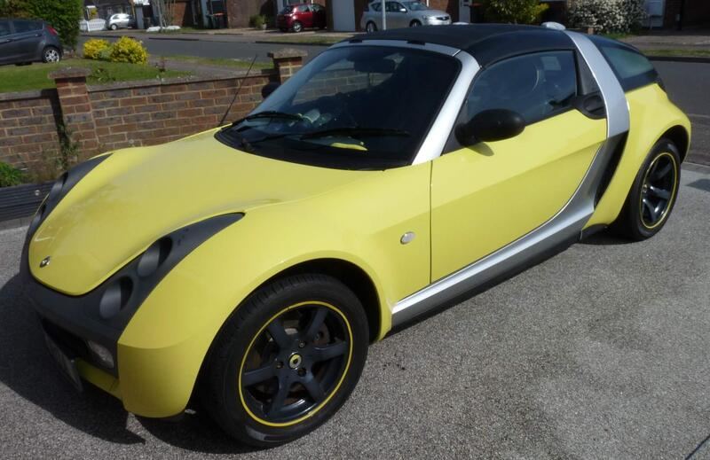
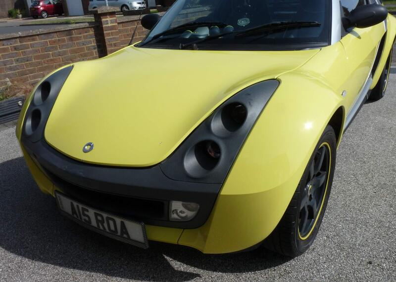
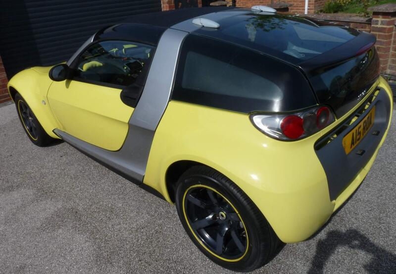

Seller photos from the AutoTrader ad.
Smart Roadster 0.7
A characterful Roadster Coupé, but the mileage is very high.
Key facts
| Price | £2,795 |
|---|---|
| Year | 2006 |
| Miles | 181,990 |
| Model | Smart Roadster 0.7 |
| Colour | Silver |
| Registration | 2006 (55 reg) |
| Owners | 3 owners |
| Service history | Full |
| MOT | 20 Mar 2027 (ad) |
| Seller | Private |
| Location | Dunstable |
| From GU7 | 50 mi (AutoTrader) |
| Checked | 13 Oct 2026 |
Why buy it
- Full service history, effectively 2 owners (ad)
- Private plate included (ad)
Things to check
182k miles: ask about the turbo and the gearbox actuator
Check for roof leaks reaching the SAM module
- Smart Roadster 452 weak spots
Galvanised Tridion cell; check underbody, subframe and rear arches. Chronic water leaks reaching the SAM module (replacement £400+); turbo failures around 70–90k miles; jerky automated gearbox.
Seller says (extract)
“I am selling my wonderful and pretty unique Smart Roadster 452 coupe in shine yellow with metallic silver Tridon cell. I know I will regret this, but retirement means we no longer need 2 cars. Officially it has had 3 previous owners, but the last person sold it to his wife, so it has only had 2. It comes complete with the private registration plate A15 ROA, worth at least 350. MOT is valid until 20th March 2027. I have MOT certificates going back to 2012. The odometer shows just over 182,000 miles but it has only done around 105,000. Sometime around 2017, the SAM computer control unit went bonkers (ironically, it happened when I was at a Smart meetup). In a brief period, the mileage jumped up due to a fault in the SAM. All this is to say that the odometer is wrong. I have proof of this from the STAR machine. Loads of paperwork from Mercedes (2006 to 2012) showing all the work done to this car. It has been well looked after. From 2013 to now, I have paperwork from S2 smarts and Smart Motorsports. Most recently - new sump fitted (Oct 2025), a new wiring loom fitted to the rear (Nov 2025), rubber mount replaced on exhaust (which is an aftermarket Janspeed stealth performance unit, new disks and pads fitted approx. 3,000 miles ago and a full C service approx. 2,000 miles ago. All the tyres are excellent with more than 6mm tread available. Service records go back to 2006 Additional 5 litre fuel fill, leather paddle shift steering wheel, upgraded horn, premium sound package and leather seats with yellow piping, all factory fitted. I have had many friends who have owned Roadsters over the years, and they are all jealous of mine, because it does not leak and it starts and runs perfectly every single time. It has been an incredibly reliable car, and this one tends to negate all the horror stories you might have heard. I have been very lucky owning this one and I am sure the new owner will be as well. It is over 20 years old, and some areas do need a bit of work and TLC to get it back to top notch. It's not cosmetically perfect so please do not expect that. It runs great and will serve the new owner well.I also include a box of spares and accessories, see picture. The CD player and radio work fine. A 3.5mm audio cable has been run from the back of the CD player head unit so you can plug in a music player. Contact me for full description.…”